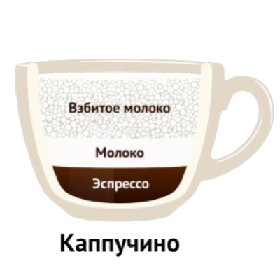

Капучино
Капучи́но (от итал. cappuccino — капуцин) — кофейный напиток итальянской кухни на основе эспрессо с добавлением в него подогретого вспененного молока. Происхождение названия напитка связано с тем, что в Европе XVII века название ордена капуцинов служило, в частности, и для обозначения характерного цвета (красно-коричневого), который имели рясы монахов этого ордена; в XVIII веке так же стали называть кофейный напиток из яичных желтков и сливок, который стали готовить в Австрии (нем. Kapuziner). Итальянская форма названия напитка (cappuccino) фиксируется лишь с XX века. В XIX веке падре Карло изобрёл первую машину по изготовлению капучино, где в одном отделении нагревалась вода и получался пар, и пар по трубочке шёл во второе отделение, где вспенивалось молоко.
Приготовление Капучино
Классический итальянский напиток готовится по следующему рецепту: в керамическую чашку из кофемашины наливается одна порция эспрессо, после чего в чашку вливается подогретое и вспененное паром молоко. Иногда при вливании молока в эспрессо бариста особыми движениями создают на поверхности напитка рисунок — такая техника называется латте-арт. Качество эспрессо, температура молока, его консистенция и пропорции очень важны для получения хорошего капучино. Также текстура вспененного молока должна быть мелкодисперсной и походить на стеклянную поверхность, а его температура в питчере должна быть в пределах 60—65 °C. При достижении данной температуры в молоке происходит расщепление лактозы на глюкозу и галактозу, что делает его сладким.